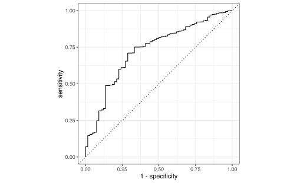
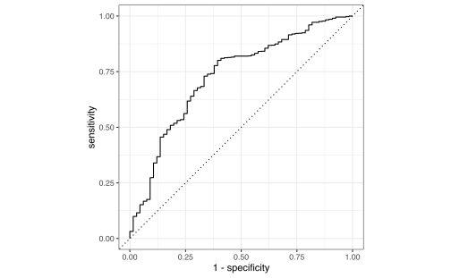
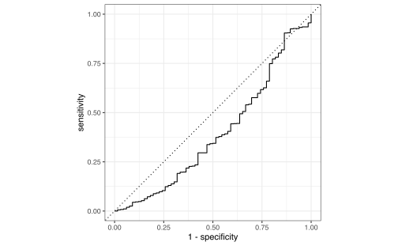
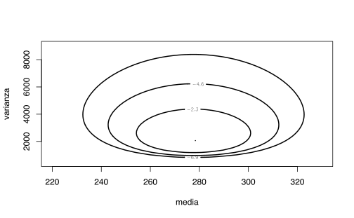
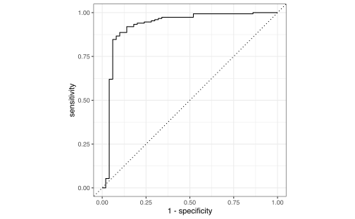

Capítulo 7 Otros Clasificadores
7.1 Clasificador Bayesiano
Bajo el modelo de aprendizaje estadístico, suponga que se quiere estimar \(f\) usando el conjunto de entrenamiento \(\{(x_1,y_1),\ldots,(x_n,y_n)\}\) donde \(y_1,\ldots,y_n\) es categórica. Para evaluar la precisión del clasificador \(\hat f\) podemos usar la tasa de error:
\[\frac 1 n \sum_{i=1}^nI(y_i\neq \hat y_i)\]
donde \(\hat y_i\) es el nivel predecido de la variable categórica para el individuo \(i\)-ésimo. La tasa de error mide la proporción de observaciones mal clasificadas por \(\hat f\) dentro del conjunto de entrenamiento. El mismo concepto se puede aplicar en el conjunto de prueba, es decir si \(Z_0\) es el conjunto de índices de datos de prueba con tamaño \(m\):
\[\begin{align} \frac 1 m \sum_{i \in Z_0}I(y_i\neq \hat y_i) \tag{7.1} \end{align}\]
Decimos que un clasificador es bueno cuando el error de prueba en (7.1) es el más pequeño.
Es posible demostrar que el error de prueba se minimiza cuando \(\hat f\) asigna a cada observación el nivel con la probabilidad más alta dados los predictores, es decir se asigna la clase \(j\) a la observación \(x_0\) en donde \[P(Y=j|X=x_0)\]
es máximo. A este clasificador se le llama clasificador bayesiano. En el caso en que el número de niveles o categorías de la variable dependiente es 2 (\(j=1,2\)), entonces se selecciona el nivel \(j\)-ésimo si: \[P(Y=j|X=x_0)>0.5\]
Al conjunto \(\{x_0: P(Y=j|X=x_0)=0.5\}\) se le llama frontera de decisión de Bayes.
La tasa bayesiana de error del clasificador para un conjunto de datos fijos es: \(1-\max_j P(Y=j|X=x_0)\). En general la tasa de error bayesiana sería: \[1-E\left[\max_j P(Y=j|X)\right]\]
Para el caso de clasificación la tasa de error bayesiana es equivalente al error irreducible.
Inconveniente: en datos reales no conocemos \(P(Y=j|X=x_0)\). Se puede aproximar estas probabilidades usando lo que se conoce como Bayes ingenuo (Naïve Bayes).
- Paso 1: Calcule la probabilidad previa para las etiquetas de clase dadas
- Paso 2: Encuentre la probabilidad de verosimilitud con cada atributo para cada clase
- Paso 3: Ponga estos valores en la fórmula de Bayes y calcule la probabilidad posterior.
- Paso 4: Revise qué clase tiene una probabilidad más alta, dado que la entrada pertenece a la clase de probabilidad más alta.

Bayes ingenuo (tomado de https://www.datacamp.com/tutorial/naive-bayes-scikit-learn)
7.2 Método de k vecinos más cercanos (KNN)
Este método aproxima la probabilidad condicional del clasificador bayesiano. Dado un entero \(K\) y una observación de prueba \(x_0\), el clasificador hace lo siguiente 1. Encuentra los primeros \(K\) vecinos más cercanos (usando alguna distancia) de observaciones que son más cercanas a \(x_0\): \(\mathcal N_0\) 2. Luego calcula
\[P(Y=j|X=x_0) = \frac{1}{K}\sum_{i \in \mathcal N_0}I(y_i=j)\]
- Finalmente, siguiendo la regla de bayes se selecciona la categoría con probabilidad condicional máxima.

Clasificación según K vecinos más cercanos (Wikimedia Commons)
7.3 Análisis Discriminante
Recuerden que en el caso del modelo logístico, se tiene que: \[P(Y=1|X=x)=\frac{e^{\beta_0+\beta_1X_1+\cdots+\beta_pX_p}}{1+e^{\beta_0+\beta_1X_1+\cdots+\beta_pX_p}}\] donde \(X_1,\ldots,X_p\) son los predictores. Para el modelo logístico tenemos los siguientes inconvenientes:
Cuando las clases están muy separadas, los parámetros del modelo logístico tienden a ser muy inestables.
Cuando la distribución de los predictores es aproximadamente normal en cada una de las clases, entonces el modelo discriminante lineal es más estable que el logístico.
El modelo logístico aplica solamente en el caso de 2 clases.
Suponga que se quiere clasificar una observación en \(K\geq 2\) clases. Sea \(\pi_k\) la probabilidad previa de que la observación provenga de la clase \(k\)-ésima. Sea \[f_k(x)=P(X=x|Y=k)\] por el teorema de Bayes: \[P_k(x)=P(Y=k|X=x)=\frac{\pi_kf_k(x)}{\sum_{l=1}^K \pi_lf_l(x)}\]
Estimación de los componentes:
- \(\pi_k\): proporción de observaciones en el conjunto de entrenamiento que pertenecen a la clase \(k\)-ésima.
- \(f_k(x)\): supuesto paramétrico que define el tipo de análisis discriminante.
7.3.1 Análisis discriminante lineal
7.3.1.1 Caso p=1
Asuma que \[f_k(x)=\frac{1}{\sqrt{2\pi}\sigma_k}\exp\left(-\frac{1}{2\sigma_k^2}(x-\mu_k)^2\right)\] donde \(\mu_k\) y \(\sigma_k\) son la media y desviación estándar para cada clase en la variable dependiente. Asumiendo que \(\sigma^2=\sigma_1^2=\cdots=\sigma_K^2\) se puede comprobar que el clasificador bayesiano asigna la clase \(k\) si
\[\begin{align} \delta_k(x)=x\frac{\mu_k}{\sigma^2}-\frac{\mu_k^2}{2\sigma^2}+\log(\pi_k) \tag{7.2} \end{align}\]
es el máximo entre los valores correspondientes a cada clase. A esta función se le llama función discriminante.
El método de análisis discriminante lineal (LDA) asume que: \[\begin{align*} \hat \mu_k&=\frac{1}{n_k}\sum_{i:y_i=k}x_i\\ \hat \sigma^2&=\frac{1}{n-K}\sum_{k=1}^K\sum_{i:y_i=k}(x_i-\hat \mu_k)^2\\ \hat \pi_k &=\frac{n_k}{n} \end{align*}\]
como estimadores plug-in en (7.2).
7.3.1.2 Caso p>1
Generalizando la sección anterior, podemos asumir que \(X=(X_1,\ldots,X_p)\) proviene de una distribución Gaussiana multivariada. Es decir, asuma que las observaciones en la clase \(k\) tienen distribución \(N(\mu_k,\Sigma)\) donde \(\mu_k\): vector de medias para la clase \(k\) y \(\Sigma\) es la matriz de varianza-covarianza para todas las \(K\) clases.
La función discriminante en este caso sería: \[\delta_k(x)=x^T\Sigma^{-1} \mu_k-\frac 1 2\mu_k^T \Sigma^{-1}\mu_k+\log \pi_k\] El método LDA sustituye los parámetros en la fórmula anterior con estimadores empíricos, tal y como se hizo para \(p=1\). La escogencia de la clase estimada sigue el mismo criterio.
Simulación de Análisis Discriminante Lineal (James et al. 2013)
7.3.2 Análisis discriminante cuadrático
Bajo los supuestos del LDA, asuma que \(\Sigma_k\) es la matriz de covarianza para la clase \(k\). En este caso las funciones discriminantes tendrían la forma: \[\delta_k(x)=-\frac 1 2 (x-\mu_k)^T\Sigma_k^{-1}(x-\mu_k)-\frac 1 2 \log |\Sigma_k|+\log \pi_k\] Al uso de las funciones anteriores como herramientas de clasificación se le llama Análisis Discriminante Cuadrático (QDA).
Relación LDA vs QDA:
- LDA es menos flexible que QDA, por la diferencia en el número de parámetros. Por lo tanto LDA tiene menos varianza que QDA.
- Si el supuesto de varianzas constantes en LDA no es adecuado, entonces el sesgo es alto.
- QDA es más adecuado que LDA cuando el número de observaciones es relativamente alto, debido a que el supuesto de varianzas constantes es más difícil de alcanzar.
Comparación de métodos:
- LDA y regresión logística producen fronteras de decisión lineales.
- LDA asume más sobre el comportamiento de los datos, con respecto a la regresión logística.
- KNN es no paramétrico, por lo tanto produce fronteras de decisión más flexibles que LDA o QDA. El grado de suavidad del clasificador (en términos de sus fronteras) depende del parámetro \(K\).
- QDA ofrece fronteras de decisión más flexibles que LDA o logística.
- KNN no tiene la misma capacidad de interpretabilidad que la regresión logística.
- Como KNN depende de la distancia entre observaciones, entonces la escala de las covariables importa.
7.4 Laboratorio
Datos sociodemográficos y de productos de aseguramiento de 5822 clientes. La variable dependiente es si cada cliente adquirió un seguro de remolques (https://liacs.leidenuniv.nl/~puttenpwhvander/library/cc2000/data.html).
library(ISLR)
data(Caravan)
dim(Caravan)## [1] 5822 86head(Caravan)## MOSTYPE MAANTHUI MGEMOMV MGEMLEEF MOSHOOFD MGODRK MGODPR MGODOV MGODGE MRELGE
## 1 33 1 3 2 8 0 5 1 3 7
## 2 37 1 2 2 8 1 4 1 4 6
## 3 37 1 2 2 8 0 4 2 4 3
## 4 9 1 3 3 3 2 3 2 4 5
## 5 40 1 4 2 10 1 4 1 4 7
## 6 23 1 2 1 5 0 5 0 5 0
## MRELSA MRELOV MFALLEEN MFGEKIND MFWEKIND MOPLHOOG MOPLMIDD MOPLLAAG MBERHOOG
## 1 0 2 1 2 6 1 2 7 1
## 2 2 2 0 4 5 0 5 4 0
## 3 2 4 4 4 2 0 5 4 0
## 4 2 2 2 3 4 3 4 2 4
## 5 1 2 2 4 4 5 4 0 0
## 6 6 3 3 5 2 0 5 4 2
## MBERZELF MBERBOER MBERMIDD MBERARBG MBERARBO MSKA MSKB1 MSKB2 MSKC MSKD
## 1 0 1 2 5 2 1 1 2 6 1
## 2 0 0 5 0 4 0 2 3 5 0
## 3 0 0 7 0 2 0 5 0 4 0
## 4 0 0 3 1 2 3 2 1 4 0
## 5 5 4 0 0 0 9 0 0 0 0
## 6 0 0 4 2 2 2 2 2 4 2
## MHHUUR MHKOOP MAUT1 MAUT2 MAUT0 MZFONDS MZPART MINKM30 MINK3045 MINK4575
## 1 1 8 8 0 1 8 1 0 4 5
## 2 2 7 7 1 2 6 3 2 0 5
## 3 7 2 7 0 2 9 0 4 5 0
## 4 5 4 9 0 0 7 2 1 5 3
## 5 4 5 6 2 1 5 4 0 0 9
## 6 9 0 5 3 3 9 0 5 2 3
## MINK7512 MINK123M MINKGEM MKOOPKLA PWAPART PWABEDR PWALAND PPERSAUT PBESAUT
## 1 0 0 4 3 0 0 0 6 0
## 2 2 0 5 4 2 0 0 0 0
## 3 0 0 3 4 2 0 0 6 0
## 4 0 0 4 4 0 0 0 6 0
## 5 0 0 6 3 0 0 0 0 0
## 6 0 0 3 3 0 0 0 6 0
## PMOTSCO PVRAAUT PAANHANG PTRACTOR PWERKT PBROM PLEVEN PPERSONG PGEZONG
## 1 0 0 0 0 0 0 0 0 0
## 2 0 0 0 0 0 0 0 0 0
## 3 0 0 0 0 0 0 0 0 0
## 4 0 0 0 0 0 0 0 0 0
## 5 0 0 0 0 0 0 0 0 0
## 6 0 0 0 0 0 0 0 0 0
## PWAOREG PBRAND PZEILPL PPLEZIER PFIETS PINBOED PBYSTAND AWAPART AWABEDR
## 1 0 5 0 0 0 0 0 0 0
## 2 0 2 0 0 0 0 0 2 0
## 3 0 2 0 0 0 0 0 1 0
## 4 0 2 0 0 0 0 0 0 0
## 5 0 6 0 0 0 0 0 0 0
## 6 0 0 0 0 0 0 0 0 0
## AWALAND APERSAUT ABESAUT AMOTSCO AVRAAUT AAANHANG ATRACTOR AWERKT ABROM
## 1 0 1 0 0 0 0 0 0 0
## 2 0 0 0 0 0 0 0 0 0
## 3 0 1 0 0 0 0 0 0 0
## 4 0 1 0 0 0 0 0 0 0
## 5 0 0 0 0 0 0 0 0 0
## 6 0 1 0 0 0 0 0 0 0
## ALEVEN APERSONG AGEZONG AWAOREG ABRAND AZEILPL APLEZIER AFIETS AINBOED
## 1 0 0 0 0 1 0 0 0 0
## 2 0 0 0 0 1 0 0 0 0
## 3 0 0 0 0 1 0 0 0 0
## 4 0 0 0 0 1 0 0 0 0
## 5 0 0 0 0 1 0 0 0 0
## 6 0 0 0 0 0 0 0 0 0
## ABYSTAND Purchase
## 1 0 No
## 2 0 No
## 3 0 No
## 4 0 No
## 5 0 No
## 6 0 NoVamos a usar las herramientas en el paquete tidymodels para efectuar una comparación entre los métodos de clasificación que hemos visto en clase. El objetivo es clasificar a los clientes entre compradores/no compradores del seguro (variable dependiente: Purchase, covariables: el resto)
library(tidymodels)
library(tidyverse)El primer paso es construir una separación de conjunto de entrenamiento y de conjunto de prueba:
set.seed(1234)
Caravan.split <- initial_split(Caravan, prop = 0.8,
strata = Purchase)
Caravan.training <- Caravan.split %>%
training()
Caravan.testing <- Caravan.split %>%
testing()Como vamos a usar el método KNN, lo conveniente es estandarizar todas las covariables:
Caravan.recipe <- recipe(Purchase ~ ., data = Caravan.training) %>%
step_normalize(all_predictors(), -all_outcomes())y aplicamos la receta sobre el conjunto de prueba para verificar que la receta funciona bien:
Caravan.recipe %>%
prep() %>%
bake(new_data = Caravan.testing)## # A tibble: 1,165 x 86
## MOSTYPE MAANTHUI MGEMOMV MGEMLEEF MOSHOOFD MGODRK MGODPR MGODOV MGODGE
## <dbl> <dbl> <dbl> <dbl> <dbl> <dbl> <dbl> <dbl> <dbl>
## 1 -0.101 -0.275 -0.856 -2.45 -0.274 -0.695 0.225 -1.05 1.08
## 2 0.680 -0.275 -0.856 0.0258 0.779 -0.695 1.39 -1.05 -0.792
## 3 -1.19 -0.275 0.401 0.0258 -0.977 0.288 -0.936 0.917 0.457
## 4 0.680 2.27 0.401 0.0258 0.779 -0.695 -0.356 0.917 -0.168
## 5 -0.881 2.27 1.66 0.0258 -0.977 -0.695 -0.356 0.917 0.457
## 6 1.23 -0.275 0.401 0.0258 1.48 -0.695 -0.936 -1.05 1.71
## 7 0.680 -0.275 1.66 0.0258 0.779 0.288 -0.356 -0.0652 1.08
## 8 -1.35 -0.275 0.401 -1.21 -1.33 -0.695 1.39 0.917 -2.04
## 9 -1.66 -0.275 0.401 0.0258 -1.68 1.27 1.39 -1.05 -2.04
## 10 1.07 -0.275 0.401 0.0258 1.13 -0.695 0.225 -0.0652 -0.168
## # ... with 1,155 more rows, and 77 more variables: MRELGE <dbl>, MRELSA <dbl>,
## # MRELOV <dbl>, MFALLEEN <dbl>, MFGEKIND <dbl>, MFWEKIND <dbl>,
## # MOPLHOOG <dbl>, MOPLMIDD <dbl>, MOPLLAAG <dbl>, MBERHOOG <dbl>,
## # MBERZELF <dbl>, MBERBOER <dbl>, MBERMIDD <dbl>, MBERARBG <dbl>,
## # MBERARBO <dbl>, MSKA <dbl>, MSKB1 <dbl>, MSKB2 <dbl>, MSKC <dbl>,
## # MSKD <dbl>, MHHUUR <dbl>, MHKOOP <dbl>, MAUT1 <dbl>, MAUT2 <dbl>,
## # MAUT0 <dbl>, MZFONDS <dbl>, MZPART <dbl>, MINKM30 <dbl>, ...7.4.1 Clasificador logístico
Vamos a ajustar un modelo logístico a los datos. Primero especificamos el modelo:
modelo_logistico <- logistic_reg() %>%
set_engine("glm") %>%
set_mode("classification")y después definimos un objeto tipo workflow para unir el tratamiento de datos (recipe) con el modelo:
logistico_wf <- workflow() %>%
add_model(modelo_logistico) %>%
add_recipe(Caravan.recipe)y ajustamos el modelo:
logistico_ajuste <- logistico_wf %>%
fit(data = Caravan.training)Obtenemos predicciones en el conjunto de prueba:
predicciones_probs <- predict(logistico_ajuste, new_data = Caravan.testing,
type = "prob")
predicciones_categ <- predict(logistico_ajuste, new_data = Caravan.testing)
head(predicciones_probs)## # A tibble: 6 x 2
## .pred_No .pred_Yes
## <dbl> <dbl>
## 1 0.981 0.0189
## 2 0.990 0.0100
## 3 0.880 0.120
## 4 0.921 0.0787
## 5 0.967 0.0329
## 6 0.994 0.00628head(predicciones_categ)## # A tibble: 6 x 1
## .pred_class
## <fct>
## 1 No
## 2 No
## 3 No
## 4 No
## 5 No
## 6 NoUnimos todos los resultados en un solo arreglo:
resultados_logistico <- Caravan.testing %>%
dplyr::select(Purchase) %>%
bind_cols(predicciones_categ) %>%
bind_cols(predicciones_probs)
head(resultados_logistico)## Purchase .pred_class .pred_No .pred_Yes
## 6 No No 0.9811405 0.01885947
## 8 No No 0.9899782 0.01002185
## 12 No No 0.8796827 0.12031730
## 22 No No 0.9212685 0.07873146
## 25 No No 0.9670789 0.03292113
## 28 No No 0.9937207 0.00627930y podemos calcular la matriz de confusión:
conf_mat(resultados_logistico, truth = Purchase, estimate = .pred_class)## Truth
## Prediction No Yes
## No 1095 64
## Yes 4 2curva ROC:
roc_curve(resultados_logistico, truth = Purchase, estimate = .pred_No) %>%
autoplot() y finalmente el área bajo la curva ROC:
roc_auc(resultados_logistico, truth = Purchase, estimate = .pred_No)## # A tibble: 1 x 3
## .metric .estimator .estimate
## <chr> <chr> <dbl>
## 1 roc_auc binary 0.728Existe otra alternativa de ajuste con el comando last_fit que automatiza el proceso:
last_fit_logistica <- logistico_wf %>%
last_fit(split = Caravan.split)Obtenemos métricas:
last_fit_logistica %>%
collect_metrics()## # A tibble: 2 x 4
## .metric .estimator .estimate .config
## <chr> <chr> <dbl> <chr>
## 1 accuracy binary 0.942 Preprocessor1_Model1
## 2 roc_auc binary 0.728 Preprocessor1_Model1y predicciones:
head(last_fit_logistica %>%
collect_predictions())## # A tibble: 6 x 7
## id .pred_No .pred_Yes .row .pred_class Purchase .config
## <chr> <dbl> <dbl> <int> <fct> <fct> <chr>
## 1 train/test split 0.981 0.0189 6 No No Preprocessor1_~
## 2 train/test split 0.990 0.0100 8 No No Preprocessor1_~
## 3 train/test split 0.880 0.120 12 No No Preprocessor1_~
## 4 train/test split 0.921 0.0787 22 No No Preprocessor1_~
## 5 train/test split 0.967 0.0329 25 No No Preprocessor1_~
## 6 train/test split 0.994 0.00628 28 No No Preprocessor1_~7.4.2 Análisis Discriminante Lineal
Usando el mismo procedimiento de datos anterior, definimos el modelo LDA:
library(discrim)
modelo_lda <- discrim_linear() %>%
set_engine("MASS") %>%
set_mode("classification")flujo de trabajo:
lda_wf <- workflow() %>%
add_model(modelo_lda) %>%
add_recipe(Caravan.recipe)ajuste del modelo:
last_fit_lda <- lda_wf %>%
last_fit(split = Caravan.split)Métricas de LDA:
last_fit_lda %>%
collect_metrics()## # A tibble: 2 x 4
## .metric .estimator .estimate .config
## <chr> <chr> <dbl> <chr>
## 1 accuracy binary 0.941 Preprocessor1_Model1
## 2 roc_auc binary 0.728 Preprocessor1_Model1curva ROC:
lda_predicciones <- last_fit_lda %>%
collect_predictions()
lda_predicciones %>%
roc_curve(truth = Purchase, estimate = .pred_No) %>%
autoplot()
y matriz de confusión:
lda_predicciones %>%
conf_mat(truth = Purchase, estimate = .pred_class)## Truth
## Prediction No Yes
## No 1091 61
## Yes 8 57.4.3 Análisis Discriminante Cuadrático
En este caso usaremos otro generador (klaR).
library(klaR)Nota: El argumento frac_common_cov=1 permite hacer LDA en lugar de QDA.
modelo_qda <- discrim_regularized(frac_common_cov = 0) %>%
set_engine("klaR") %>%
set_mode("classification")qda_wf <- workflow() %>%
add_model(modelo_qda) %>%
add_recipe(Caravan.recipe)
last_fit_qda <- qda_wf %>%
last_fit(split = Caravan.split)last_fit_qda %>%
collect_metrics()## # A tibble: 2 x 4
## .metric .estimator .estimate .config
## <chr> <chr> <dbl> <chr>
## 1 accuracy binary 0.903 Preprocessor1_Model1
## 2 roc_auc binary 0.720 Preprocessor1_Model1qda_predicciones <- last_fit_qda %>%
collect_predictions()
qda_predicciones %>%
roc_curve(truth = Purchase, estimate = .pred_No) %>%
autoplot()
qda_predicciones %>%
conf_mat(truth = Purchase, estimate = .pred_class)## Truth
## Prediction No Yes
## No 1042 56
## Yes 57 107.4.4 K vecinos más cercanos
En el caso del KNN se va a seleccionar el número de vecinos a través de validación cruzada, usando como métrica el AUC.
Este método requiere la siguiente librería para funcionar
library(kknn)Primero definimos los conjuntos bajo el k-fold:
set.seed(178)
Caravan.folds <- vfold_cv(Caravan.training, v = 5,
strata = Purchase)y definimos el modelo KNN y el flujo de trabajo:
modelo_knn <- nearest_neighbor(neighbors = tune()) %>%
set_engine("kknn") %>%
set_mode("classification")
knn_wf <- workflow() %>%
add_model(modelo_knn) %>%
add_recipe(Caravan.recipe)Definimos una grilla de posibles valores de # de vecinos que usaremos en el k-fold:
k_grid <- tibble(neighbors = c(50, 75, 100, 125, 150,
175, 200, 225))
set.seed(178)
knn_tuning <- knn_wf %>%
tune_grid(resamples = Caravan.folds, grid = k_grid)y se selecciona el modelo con el mejor AUC:
knn_tuning %>%
show_best("roc_auc")## # A tibble: 5 x 7
## neighbors .metric .estimator mean n std_err .config
## <dbl> <chr> <chr> <dbl> <int> <dbl> <chr>
## 1 225 roc_auc binary 0.711 5 0.0145 Preprocessor1_Model8
## 2 200 roc_auc binary 0.709 5 0.0151 Preprocessor1_Model7
## 3 175 roc_auc binary 0.707 5 0.0161 Preprocessor1_Model6
## 4 150 roc_auc binary 0.705 5 0.0177 Preprocessor1_Model5
## 5 125 roc_auc binary 0.701 5 0.0189 Preprocessor1_Model4mejor modelo y actualización del flujo de trabajo:
mejor_knn <- knn_tuning %>%
select_best(metric = "roc_auc")
final_knn_wf <- knn_wf %>%
finalize_workflow(mejor_knn)Ahora ajustamos el modelo y analizamos su rendimiento con los conjuntos de entrenamiento y prueba iniciales:
last_fit_knn <- final_knn_wf %>%
last_fit(split = Caravan.split)
last_fit_knn %>%
collect_metrics()## # A tibble: 2 x 4
## .metric .estimator .estimate .config
## <chr> <chr> <dbl> <chr>
## 1 accuracy binary 0.943 Preprocessor1_Model1
## 2 roc_auc binary 0.693 Preprocessor1_Model1knn_predicciones <- last_fit_knn %>%
collect_predictions()
knn_predicciones %>%
roc_curve(truth = Purchase, estimate = .pred_No) %>%
autoplot()
knn_predicciones %>%
conf_mat(truth = Purchase, estimate = .pred_class)## Truth
## Prediction No Yes
## No 1099 66
## Yes 0 0Máquinas de soporte vectorial
modelo_svm <- svm_poly(degree = 1) %>%
set_mode("classification") %>%
set_engine("kernlab", scaled = FALSE)
svm_wf <- workflow() %>%
add_model(modelo_svm) %>%
add_recipe(Caravan.recipe)
last_fit_svm <- svm_wf %>%
last_fit(split = Caravan.split)
last_fit_svm %>%
collect_metrics()## # A tibble: 2 x 4
## .metric .estimator .estimate .config
## <chr> <chr> <dbl> <chr>
## 1 accuracy binary 0.943 Preprocessor1_Model1
## 2 roc_auc binary 0.395 Preprocessor1_Model1svm_predicciones <- last_fit_svm %>%
collect_predictions()
svm_predicciones %>%
roc_curve(truth = Purchase, estimate = .pred_No) %>%
autoplot()
svm_predicciones %>%
conf_mat(truth = Purchase, estimate = .pred_class)## Truth
## Prediction No Yes
## No 1099 66
## Yes 0 0modelo_svm <- svm_poly(degree = 2) %>%
set_mode("classification") %>%
set_engine("kernlab", scaled = FALSE)
svm_wf <- workflow() %>%
add_model(modelo_svm) %>%
add_recipe(Caravan.recipe)
last_fit_svm <- svm_wf %>%
last_fit(split = Caravan.split)
last_fit_svm %>%
collect_metrics()## # A tibble: 2 x 4
## .metric .estimator .estimate .config
## <chr> <chr> <dbl> <chr>
## 1 accuracy binary 0.872 Preprocessor1_Model1
## 2 roc_auc binary 0.656 Preprocessor1_Model1svm_predicciones <- last_fit_svm %>%
collect_predictions()
svm_predicciones %>%
roc_curve(truth = Purchase, estimate = .pred_No) %>%
autoplot()
svm_predicciones %>%
conf_mat(truth = Purchase, estimate = .pred_class)## Truth
## Prediction No Yes
## No 1001 51
## Yes 98 15modelo_svm <- svm_poly(degree = 3) %>%
set_mode("classification") %>%
set_engine("kernlab", scaled = FALSE)
svm_wf <- workflow() %>%
add_model(modelo_svm) %>%
add_recipe(Caravan.recipe)
last_fit_svm <- svm_wf %>%
last_fit(split = Caravan.split)
last_fit_svm %>%
collect_metrics()## # A tibble: 2 x 4
## .metric .estimator .estimate .config
## <chr> <chr> <dbl> <chr>
## 1 accuracy binary 0.886 Preprocessor1_Model1
## 2 roc_auc binary 0.645 Preprocessor1_Model1svm_predicciones <- last_fit_svm %>%
collect_predictions()
svm_predicciones %>%
roc_curve(truth = Purchase, estimate = .pred_No) %>%
autoplot()
svm_predicciones %>%
conf_mat(truth = Purchase, estimate = .pred_class)## Truth
## Prediction No Yes
## No 1016 50
## Yes 83 16modelo_svm <- svm_poly(degree = 4) %>%
set_mode("classification") %>%
set_engine("kernlab", scaled = FALSE)
svm_wf <- workflow() %>%
add_model(modelo_svm) %>%
add_recipe(Caravan.recipe)
last_fit_svm <- svm_wf %>%
last_fit(split = Caravan.split)
last_fit_svm %>%
collect_metrics()## NULLsvm_predicciones <- last_fit_svm %>%
collect_predictions()
svm_predicciones %>%
roc_curve(truth = Purchase, estimate = .pred_No) %>%
autoplot()## Error in `chr_as_locations()`:
## ! Can't subset columns that don't exist.
## x Column `.pred_No` doesn't exist.svm_predicciones %>%
conf_mat(truth = Purchase, estimate = .pred_class)## Error:
## ! object 'Purchase' not foundlibrary(kernlab)
set.seed(1)
sim_data <- tibble(x1 = rnorm(40), x2 = rnorm(40),
y = factor(rep(c(-1, 1), 20))) %>%
mutate(x1 = ifelse(y == 1, x1 + 1.5, x1), x2 = ifelse(y ==
1, x2 + 1.5, x2))ggplot(sim_data, aes(x1, x2, color = y)) + geom_point()
svm_linear_spec <- svm_poly(degree = 1) %>%
set_mode("classification") %>%
set_engine("kernlab", scaled = FALSE)svm_linear_fit <- svm_linear_spec %>%
set_args(cost = 10) %>%
fit(y ~ ., data = sim_data)
svm_linear_fit## parsnip model object
##
## Support Vector Machine object of class "ksvm"
##
## SV type: C-svc (classification)
## parameter : cost C = 10
##
## Polynomial kernel function.
## Hyperparameters : degree = 1 scale = 1 offset = 1
##
## Number of Support Vectors : 17
##
## Objective Function Value : -152.0188
## Training error : 0.125
## Probability model included.library(kernlab)
svm_linear_fit %>%
extract_fit_engine() %>%
plot()
Si reducimos el costo
svm_linear_fit <- svm_linear_spec %>%
set_args(cost = 0.1) %>%
fit(y ~ ., data = sim_data)
svm_linear_fit## parsnip model object
##
## Support Vector Machine object of class "ksvm"
##
## SV type: C-svc (classification)
## parameter : cost C = 0.1
##
## Polynomial kernel function.
## Hyperparameters : degree = 1 scale = 1 offset = 1
##
## Number of Support Vectors : 25
##
## Objective Function Value : -2.0376
## Training error : 0.15
## Probability model included.svm_linear_wf <- workflow() %>%
add_model(svm_linear_spec %>%
set_args(cost = tune())) %>%
add_formula(y ~ .)
set.seed(1234)
sim_data_fold <- vfold_cv(sim_data, strata = y)
param_grid <- grid_regular(cost(), levels = 10)
tune_res <- tune_grid(svm_linear_wf, resamples = sim_data_fold,
grid = param_grid)
autoplot(tune_res)
best_cost <- select_best(tune_res, metric = "accuracy")
svm_linear_final <- finalize_workflow(svm_linear_wf,
best_cost)
(svm_linear_fit <- svm_linear_final %>%
fit(sim_data))## == Workflow [trained] =======================================================================================================================================================================================================================
## Preprocessor: Formula
## Model: svm_poly()
##
## -- Preprocessor -----------------------------------------------------------------------------------------------------------------------------------------------------------------------------------------------------------------------------
## y ~ .
##
## -- Model ------------------------------------------------------------------------------------------------------------------------------------------------------------------------------------------------------------------------------------
## Support Vector Machine object of class "ksvm"
##
## SV type: C-svc (classification)
## parameter : cost C = 1
##
## Polynomial kernel function.
## Hyperparameters : degree = 1 scale = 1 offset = 1
##
## Number of Support Vectors : 18
##
## Objective Function Value : -16.025
## Training error : 0.15
## Probability model included.Kernels en alta dimensión
set.seed(1)
sim_data2 <- tibble(x1 = rnorm(200) + rep(c(2, -2,
0), c(100, 50, 50)), x2 = rnorm(200) + rep(c(2,
-2, 0), c(100, 50, 50)), y = factor(rep(c(1, 2),
c(150, 50))))
sim_data2 %>%
ggplot(aes(x1, x2, color = y)) + geom_point()
svm_rbf_spec <- svm_rbf() %>%
set_mode("classification") %>%
set_engine("kernlab")svm_rbf_fit <- svm_rbf_spec %>%
fit(y ~ ., data = sim_data2)svm_rbf_fit %>%
extract_fit_engine() %>%
plot()
set.seed(2)
sim_data2_test <- tibble(x1 = rnorm(200) + rep(c(2,
-2, 0), c(100, 50, 50)), x2 = rnorm(200) + rep(c(2,
-2, 0), c(100, 50, 50)), y = factor(rep(c(1, 2),
c(150, 50))))augment(svm_rbf_fit, new_data = sim_data2_test) %>%
roc_curve(truth = y, estimate = .pred_1) %>%
autoplot()